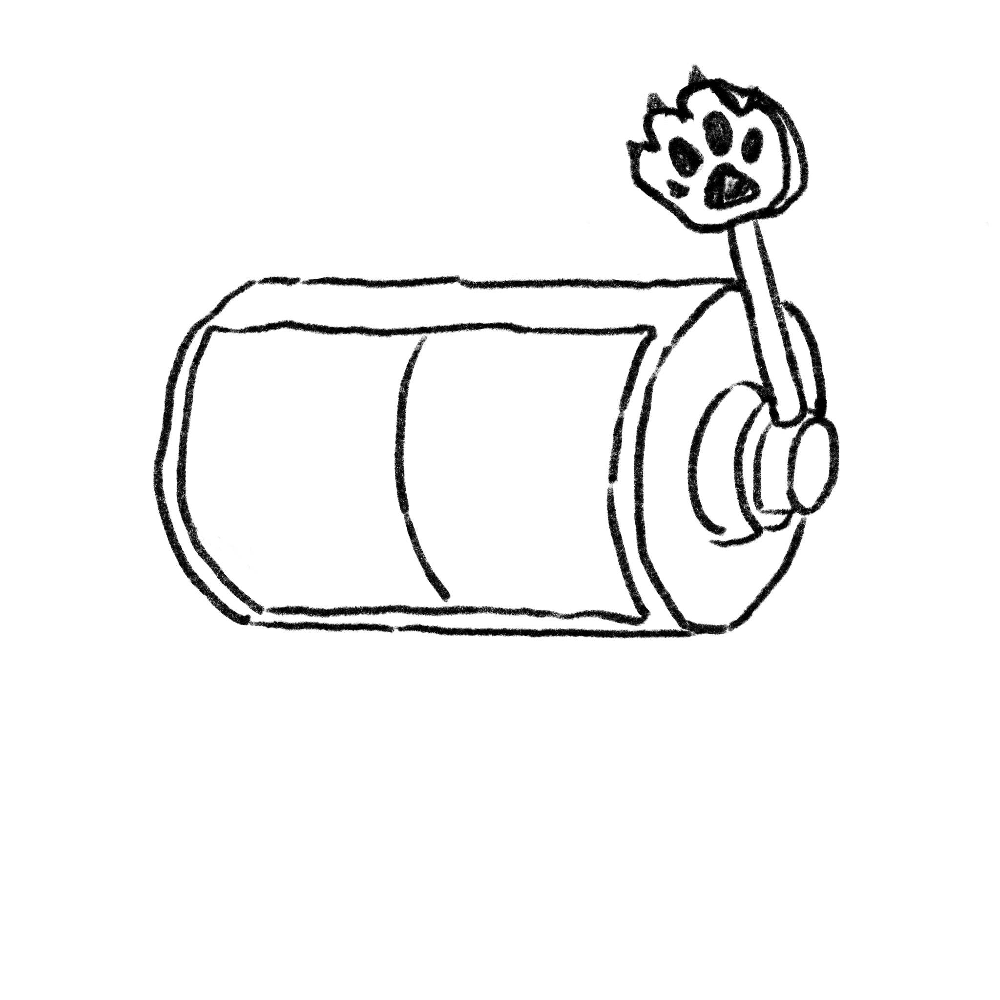

<!DOCTYPE html>
<html lang="zh-Hans">
<head>
  <meta charset="UTF-8" />
  <meta name="viewport" content="width=device-width, initial-scale=1.0" />
  <title>小岛日记 · Island Journal</title>
  <meta name="description" content="拉下手摇杆,抽取今天的日记话题。Pull the lever, draw today's reflection prompts." />

  <link rel="preconnect" href="https://fonts.googleapis.com" />
  <link rel="preconnect" href="https://fonts.gstatic.com" crossorigin />
  <link href="https://fonts.googleapis.com/css2?family=Nunito:wght@400;500;600;700;800;900&family=Noto+Sans+SC:wght@400;500;700&display=swap" rel="stylesheet" />

  <link rel="stylesheet" href="https://cdn.jsdelivr.net/npm/animal-island-vue@0.2.1/dist/index.css" />

  <script type="importmap">
  {
    "imports": {
      "vue": "https://unpkg.com/vue@3.4.27/dist/vue.esm-browser.prod.js",
      "animal-island-vue": "https://esm.sh/animal-island-vue@0.2.1?external=vue"
    }
  }
  </script>

  <style>
    :root {
      --primary: #19c8b9;
      --teal: #82d5bb;
      --teal-deep: #40a880;
      --yellow: #f7cd67;
      --yellow-deep: #d4a030;
      --text: #794f27;
      --text-body: #725d42;
      --text-muted: #8a7b66;
      --bg: #f8f8f0;
      --bg-content: rgb(247, 243, 223);
      --border: #c4b89e;
      --wood-light: #c9a26b;
      --wood: #a06d3f;
      --wood-dark: #5c3d1f;
    }
    * { box-sizing: border-box; margin: 0; padding: 0; }
    html, body {
      background: var(--bg);
      color: var(--text-body);
      font-family: 'Nunito', 'Noto Sans SC', -apple-system, 'PingFang SC', sans-serif;
      font-weight: 500;
      letter-spacing: 0.01em;
      min-height: 100vh;
      -webkit-font-smoothing: antialiased;
    }
    .page {
      max-width: 920px;
      margin: 0 auto;
      padding: 32px 24px 80px;
      display: flex;
      flex-direction: column;
      gap: 28px;
    }

    /* =============== TOP BAR =============== */
    .top-bar {
      display: grid;
      grid-template-columns: minmax(220px, 280px) 1fr;
      gap: 32px;
      align-items: stretch;
    }

    /* date note (left) */
    .date-note {
      position: relative;
      padding: 14px 18px 18px !important;
      display: flex;
      flex-direction: column;
      gap: 8px;
      transform: rotate(-1.5deg);
    }
    .date-note-tag {
      position: absolute;
      top: -14px;
      left: 18px;
      z-index: 2;
    }
    .date-note-body {
      margin-top: 14px;
      display: flex;
      flex-direction: column;
      gap: 4px;
      text-align: center;
    }
    .date-note-ymd {
      font-size: 15px;
      font-weight: 600;
      color: var(--text);
      padding: 3px 0;
    }
    .date-note-weekday {
      font-family: 'Nunito', 'Noto Sans SC', sans-serif;
      font-size: 38px;
      font-weight: 900;
      color: var(--text);
      letter-spacing: 4px;
      line-height: 1.1;
      margin: 4px 0 6px;
    }
    .date-note-lunar {
      font-size: 13px;
      color: var(--text-body);
      padding: 4px 10px;
      border: 1.5px dashed rgba(120, 90, 50, 0.35);
      border-radius: 999px;
      align-self: center;
      font-weight: 600;
    }

    /* branding (right) */
    .branding {
      display: flex;
      flex-direction: column;
      justify-content: center;
      align-items: flex-end;
      text-align: right;
      gap: 12px;
      padding-right: 6px;
    }
    .branding-cn {
      font-family: 'Nunito', 'Noto Sans SC', sans-serif;
      font-size: clamp(40px, 6.5vw, 60px);
      font-weight: 900;
      color: var(--text);
      letter-spacing: 6px;
      line-height: 1;
      -webkit-text-stroke: 1.5px transparent;
      text-shadow:
        0 2px 0 rgba(120, 80, 30, 0.12),
        0 4px 0 rgba(120, 80, 30, 0.08);
    }
    .branding-en {
      font-family: 'Nunito', sans-serif;
      font-size: 18px;
      font-weight: 700;
      letter-spacing: 4px;
      color: var(--teal-deep);
      text-transform: uppercase;
    }
    .typewriter-line {
      font-size: 15px;
      font-weight: 600;
      color: var(--text-body);
      line-height: 1.6;
      min-height: 1.6em;
      display: inline-block;
      max-width: 100%;
    }
    .typewriter-line::after {
      content: '|';
      display: inline-block;
      width: 0;
      margin-left: 2px;
      color: var(--teal-deep);
      animation: caret 0.9s steps(1) infinite;
    }
    @keyframes caret { 50% { opacity: 0; } }

    /* =============== HAND-DRAWN CABINET (image-based) =============== */
    .cabinet-wrap {
      width: 100%;
      max-width: 760px;
      margin: 0 auto;
      display: flex;
      flex-direction: column;
      gap: 10px;
    }
    .cabinet {
      position: relative;
      width: 100%;
      aspect-ratio: 1 / 1;
      max-width: 640px;
      margin: 0 auto;
    }
    .cabinet-img {
      position: absolute;
      inset: 0;
      width: 100%;
      height: 100%;
      object-fit: contain;
      user-select: none;
      pointer-events: none;
      transition: opacity 0.12s linear;
    }
    .cabinet-img.is-hidden { opacity: 0; }

    /* The two reel text overlays sit inside the two halves of the cylinder.
       Coordinates are % of the image container. */
    .reel-text {
      position: absolute;
      display: flex;
      flex-direction: column;
      align-items: center;
      justify-content: center;
      padding: 10px 12px;
      text-align: center;
      gap: 8px;
      top: 23%;
      height: 34%;
      pointer-events: none;
    }
    .reel-text-left  { left: 13%;  width: 23%; }
    .reel-text-right { left: 42%;  width: 23%; }
    .reel-text.spinning { animation: reel-shake 0.09s linear infinite; }
    @keyframes reel-shake {
      0%, 100% { transform: translateY(0); }
      50% { transform: translateY(-2px); }
    }
    .reel-tag-mini {
      display: inline-flex;
      padding: 2px 10px;
      border-radius: 999px;
      font-weight: 800;
      font-size: 10px;
      letter-spacing: 1.5px;
      border: 1.5px solid #3d2812;
      color: #3d2812;
    }
    .reel-text-left  .reel-tag-mini { background: rgba(247, 205, 103, 0.65); border-color: #7a5e10; color: #5c4408; }
    .reel-text-right .reel-tag-mini { background: rgba(130, 213, 187, 0.65); border-color: #1e6e58; color: #155544; }
    .reel-body {
      font-size: 13px;
      font-weight: 600;
      line-height: 1.45;
      color: #1f1206;
      word-break: break-word;
      overflow: hidden;
      display: -webkit-box;
      -webkit-line-clamp: 6;
      -webkit-box-orient: vertical;
    }

    /* Invisible click area over the lever (top-right region of the image) */
    .crank-hit {
      position: absolute;
      left: 60%;
      top: 0%;
      width: 35%;
      height: 45%;
      background: transparent;
      border: none;
      padding: 0;
      cursor: pointer;
      border-radius: 28%;
      transition: background 0.15s;
      z-index: 3;
    }
    .crank-hit:hover { background: rgba(247, 205, 103, 0.18); }
    .crank-hit:active { background: rgba(247, 205, 103, 0.28); }
    .crank-hit:focus { outline: 3px dashed rgba(247, 205, 103, 0.8); outline-offset: -4px; }
    .crank-hit:disabled { cursor: wait; }

    .machine-footer {
      display: flex;
      justify-content: space-between;
      align-items: center;
      flex-wrap: wrap;
      gap: 10px;
      padding-top: 6px;
    }
    .hint { color: var(--text-muted); font-size: 14px; font-weight: 600; }
    .pull-count {
      display: inline-flex;
      align-items: center;
      gap: 6px;
      font-size: 13px;
      font-weight: 700;
      color: var(--text);
      padding: 4px 14px;
      background: #fde9a8;
      border: 2px solid var(--yellow-deep);
      border-radius: 999px;
    }

    /* =============== JOURNAL =============== */
    .journal {
      padding: 28px 26px !important;
      display: flex;
      flex-direction: column;
      gap: 18px;
    }
    .journal-header {
      display: flex;
      justify-content: space-between;
      align-items: center;
      flex-wrap: wrap;
      gap: 10px;
    }
    .empty-hint {
      text-align: center;
      color: var(--text-muted);
      font-style: italic;
      padding: 18px;
      background: rgb(247, 243, 223);
      border-radius: 18px;
      border: 2px dashed var(--border);
    }
    .prompt-block { display: flex; flex-direction: column; gap: 8px; }
    .prompt-line {
      display: flex;
      align-items: flex-start;
      gap: 12px;
      padding: 12px 16px;
      background: rgb(247, 243, 223);
      border: 2px solid var(--border);
      border-radius: 18px;
      font-weight: 600;
      color: var(--text);
    }
    .prompt-num {
      flex-shrink: 0;
      width: 26px;
      height: 26px;
      border-radius: 50%;
      background: var(--teal-deep);
      color: #fff;
      display: flex;
      align-items: center;
      justify-content: center;
      font-weight: 800;
      font-size: 13px;
    }
    .prompt-block:nth-of-type(2) .prompt-num { background: var(--yellow-deep); }
    .journal-textarea {
      width: 100%;
      min-height: 140px;
      padding: 14px 18px;
      font-family: inherit;
      font-size: 14px;
      font-weight: 500;
      line-height: 1.65;
      color: var(--text-body);
      background: rgb(247, 243, 223);
      border: 2px solid var(--border);
      border-radius: 22px;
      resize: vertical;
      outline: none;
      transition: border-color 0.15s, box-shadow 0.15s;
    }
    .journal-textarea:hover { border-color: #a89878; }
    .journal-textarea:focus {
      border-color: #ffcc00;
      box-shadow: 0 0 0 3px rgba(255, 204, 0, 0.15);
    }
    .journal-textarea::placeholder {
      color: var(--border);
      font-style: italic;
      font-weight: 400;
    }
    .journal-actions { display: flex; gap: 10px; justify-content: flex-start; }
    .paper-note {
      text-align: center;
      font-size: 12px;
      color: var(--text-muted);
      font-style: italic;
    }
    .footer-note {
      color: var(--text-muted);
      font-size: 13px;
      text-align: center;
      padding-top: 8px;
    }

    /* responsive */
    @media (max-width: 720px) {
      .top-bar {
        grid-template-columns: 1fr;
        gap: 18px;
      }
      .branding { align-items: center; text-align: center; padding-right: 0; }
      .date-note { align-self: flex-start; margin-left: 6px; }
      .slot-row { flex-direction: column; }
      .reels { flex-direction: column; }
      .crank-column { flex-direction: row; width: 100%; justify-content: center; }
      .crank { width: 220px; height: 70px; transform: rotate(-90deg); }
    }
  </style>
</head>
<body>
  <div id="app"></div>

  <script type="module">
    import { createApp, ref, onMounted, watch, computed } from 'vue';
    import { Title, Card, Button, Time, Divider, Typewriter, Cursor } from 'animal-island-vue';

    /* ================= Question pools ================= */
    const DEEP_QUESTIONS = [
      "If your life were a book, what would the title of this current chapter be?",
      "What does a 'meaningful' day look like to you, in concrete detail?",
      "If you could live your last year over again, what would you do differently?",
      "What part of who you are today would your 10-year-old self be proud of?",
      "What part of who you are today would your 10-year-old self be confused by?",
      "If you knew you couldn't fail, what would you start tomorrow?",
      "What is something you believe deeply that you can't prove?",
      "What does 'home' mean to you right now, beyond a physical place?",
      "If you had to teach one lesson to a younger version of yourself, what would it be?",
      "What is one small thing that consistently makes you feel alive?",
      "What would you do with a completely free, unstructured month?",
      "Whose life are you secretly comparing yours to, and why?",
      "What does success look like when no one is watching?",
      "If your values were a recipe, what would the main ingredients be?",
      "What part of your life feels most like it's on autopilot?",
      "What emotion have you been avoiding lately, and what is it trying to tell you?",
      "When did you last cry, and what was it really about?",
      "What's the difference between how you felt today and how you said you felt?",
      "Where in your body do you feel stress most often? What does it feel like?",
      "What's something that made you smile this week that surprised you?",
      "What feeling are you most uncomfortable letting other people see?",
      "When was the last time you felt completely at peace? What conditions made that possible?",
      "What does loneliness feel like for you, specifically?",
      "If your current mood had a color and a sound, what would they be?",
      "What is one feeling you wish you could feel more often?",
      "What's a compliment you received that you didn't quite believe?",
      "What angers you that probably shouldn't, and what's underneath the anger?",
      "What does anxiety try to protect you from?",
      "When do you feel most like yourself?",
      "What's an emotion you're grateful you've gotten better at handling?",
      "Who in your life have you been taking for granted?",
      "What would you say to someone you've lost, if you could send one message?",
      "Who is someone you think about often but rarely contact? Why?",
      "What kind of friend are you, and what kind of friend do you want to be?",
      "What's a relationship pattern you've noticed in your own life?",
      "When did someone last truly listen to you? How did it feel?",
      "What's something you've never told anyone, and why?",
      "Who has shaped your idea of love, for better or worse?",
      "What do you need from the people closest to you that you haven't asked for?",
      "What's a kindness you've received that you've never been able to repay?",
      "Who do you become around your family that you aren't elsewhere?",
      "What does forgiveness mean to you — and is there someone you're still working on forgiving?",
      "Who in your life expands you, and who shrinks you?",
      "What's an old friendship you mourn the loss of?",
      "What's one thing you've never thanked your past self for?",
      "If you could have one superpower, what would it be — and what would you actually use it for in your daily life?",
      "If you woke up tomorrow with one new skill mastered, what would you choose and why?",
      "What's a question you've been afraid to ask?",
      "If your dreams were trying to send you a message, what do you think it would be?",
      "What's something 'weird' you secretly love?",
      "If you could time-travel for one day with no ability to change anything, where would you go?",
      "What's a future you imagine for yourself that you've never said out loud?",
      "If you could invent a holiday, what would it celebrate and how?",
      "What's a wild idea you've had recently that you dismissed too quickly?",
      "If you had to design a museum about your life, what would the first exhibit be?",
      "What invention do you wish existed?",
      "If you could send one object 1000 years into the future, what would it be?",
      "If your inner critic had a name and a face, what would they look like?",
      "What's an alternate life path you sometimes imagine?",
      "If you had to live in a single decade (past or future), which one and why?",
      "What's one small habit that has changed your life more than you expected?",
      "If your body could write you a letter today, what would it say?",
      "What's something you do daily that you rarely think about — and what would change if you paid attention to it?",
      "What's a 'small luxury' in your life that you'd defend fiercely?",
      "What does rest actually look like for you — not what you tell yourself it should look like?",
      "What part of your morning routine sets the tone for the rest of your day?",
      "What's a way you're kind to yourself that you wish you'd discovered sooner?",
      "What's something you used to love doing that you've stopped — for no clear reason?",
      "If you tracked your screen time honestly, what would surprise you?",
      "When was the last time you were bored, and what did boredom give you?",
      "What's the relationship between you and sleep right now?",
      "What food gives you a feeling of being cared for?",
      "What's a tiny ritual that brings you joy?",
      "If today had a soundtrack, what's the first song on it?",
      "What's the most beautiful thing you noticed this week?",
      "What's a fear you've outgrown, and how did that happen?",
      "What's a fear you'd like to outgrow?",
      "What's something you're proud of that took a long time?",
      "When did you last surprise yourself?",
      "What feedback have you received that stung, but turned out to be true?",
      "What's something you've quit that you're now proud of quitting?",
      "What's a 'failure' that, looking back, you wouldn't undo?",
      "What do you want to be different about your life one year from now?",
      "What's something you keep starting and never finishing? Why?",
      "What would you attempt if you knew it was okay to be bad at it?",
      "Where in your life are you brave without realizing it?",
      "What's a risk that didn't work out, but taught you something?",
      "What's an old story you tell about yourself that may no longer be true?",
      "What does 'enough' mean to you, in a world that always asks for more?",
      "What's something you used to believe was a flaw that you now see differently?",
      "If money truly weren't a factor, how would you spend your weekdays?",
      "What kind of work makes time disappear for you?",
      "What part of your work do you find quietly meaningful?",
      "What's something you're good at that you don't take credit for?",
      "What does 'ambition' mean to you right now — has its meaning shifted?",
      "Who do you secretly want to be seen by, in your work?",
      "What would 'enough' professional success look like for you?",
      "What's a project you'd start if no one would judge it?",
      "Where do you feel most useful?",
      "If you had to write your own job description, what would it actually say?",
      "What's a memory that feels like it belongs to a different version of you?",
      "What's a smell that always takes you somewhere else?",
      "What's something you remember vividly that no one else would?",
      "What object in your home holds the most story?",
      "What's a song that, when you hear it, you become a younger version of yourself?",
      "Whose voice plays in your head most often?",
      "What's something your culture taught you that you've kept, and what have you released?",
      "What part of your identity feels chosen, and what part feels inherited?",
      "What's a place you've only visited once that you still think about?",
      "What's a small moment of beauty you've never told anyone about?",
      "What's something ordinary you'd miss terribly if it were gone?",
      "Who made your life easier today, even slightly?",
      "What part of your body have you been ungrateful for?",
      "What's a way the world has surprised you lately, in a good way?",
      "What did you almost not do today, but did anyway?",
      "What's a privilege in your life you've stopped noticing?",
      "What's something you've gotten better at without trying?",
      "What part of today would you save in a tiny glass jar?",
      "What's a recent moment you wish you'd been more present for?",
      "What's something you used to want desperately that you now have?",
      "What's one thing about right now — exactly now — that's actually okay?",
      "If you wrote a thank-you note today, who would it be to and what would it say?",
      "What's been quietly going right in your life that you haven't acknowledged?",
    ];

    const SIMPLE_QUESTIONS = [
      "How do you feel today? Name one word.",
      "What was the happiest moment today, even a tiny one?",
      "What did you eat that you actually enjoyed today?",
      "What's the weather doing where you are?",
      "What's the first thing you noticed when you woke up?",
      "Who did you talk to today?",
      "What made you laugh recently?",
      "What's one small thing that went well today?",
      "What are you looking forward to this week?",
      "Did you go outside today? How was it?",
      "What's something you're wearing today that you like?",
      "What's a sound you noticed today?",
      "What's a color you saw a lot of today?",
      "What did you drink today? Was it good?",
      "Are you tired right now? On a scale of 1–10?",
      "What's the last song you listened to?",
      "What's been on your mind in the background today?",
      "What's one thing you finished today, big or small?",
      "What did your body need today that you gave it (or didn't)?",
      "Who texted or called you today?",
      "What's the last thing that made you smile?",
      "What's one thing you saw outside today?",
      "What's something kind you did today (for yourself or someone else)?",
      "What's been frustrating today?",
      "What time did you wake up? How did you feel about it?",
      "What's one thing you're grateful for right now?",
      "What's the messiest spot in your space today?",
      "Did you move your body today? How?",
      "What's a smell you noticed today?",
      "What's a tiny win from today?",
      "What's something you wish you'd done differently today?",
      "What's a phrase you said (or heard) a lot today?",
      "What did you scroll past that stuck with you?",
      "How is your energy right now? Like a battery percentage.",
      "What's one thing you're putting off?",
      "What's a small comfort you're enjoying right now?",
      "Did you learn anything new today, even something tiny?",
      "What's the most beautiful thing you saw today?",
      "Who made today easier for you?",
      "What's something you want to remember about today?",
      "What's something you'd like to leave behind today?",
      "What did you say 'yes' to today? What did you say 'no' to?",
      "If today were a flavor, what would it taste like?",
      "What's the temperature of your mood right now?",
      "What's one thing you want to do before bed?",
      "What does the inside of your head sound like right now?",
      "What's a tiny pleasure you've had today?",
      "What's the last photo you took? Why did you take it?",
      "What's been the easiest part of today?",
      "What's been the hardest part of today?",
      "What time is it where you are, and how do you feel about it?",
      "What did your morning look like today?",
      "What does the rest of today look like for you?",
      "What's a sentence you'd write on a postcard about today?",
      "If your day were weather, what would the forecast say?",
      "What's a thought that keeps looping today?",
      "How does your space feel today — cozy, cluttered, calm, chaotic?",
      "What's something you noticed about a stranger today?",
      "Did you laugh out loud today? At what?",
      "What's the best thing you ate this week?",
      "What's a small habit you actually did today?",
      "What's something you'd like more of tomorrow?",
    ];

    /* ================= helpers ================= */
    const STORAGE = { journal: 'island-journal-', count: 'island-pull-count' };
    const pickOne = (arr) => arr[Math.floor(Math.random() * arr.length)];
    const todayKey = () => {
      const d = new Date();
      return `${d.getFullYear()}-${String(d.getMonth()+1).padStart(2,'0')}-${String(d.getDate()).padStart(2,'0')}`;
    };
    const formatYmd = () => {
      const d = new Date();
      return `${d.getFullYear()}年${d.getMonth()+1}月${d.getDate()}日`;
    };
    const weekdayCN = () => '星期' + ['日','一','二','三','四','五','六'][new Date().getDay()];
    const lunarDayCN = (d) => {
      const ones = ['','一','二','三','四','五','六','七','八','九','十'];
      if (d <= 10) return '初' + ones[d];
      if (d === 20) return '二十';
      if (d === 30) return '三十';
      if (d < 20) return '十' + ones[d - 10];
      return '廿' + ones[d - 20];
    };
    const lunarStr = () => {
      try {
        const fmt = new Intl.DateTimeFormat('zh-CN-u-ca-chinese', { month: 'long', day: 'numeric' });
        const raw = fmt.format(new Date());
        const match = raw.match(/(.+月)(\d+)/);
        if (!match) return '农历 ' + raw;
        const dayNum = parseInt(match[2], 10);
        return '农历 ' + match[1] + lunarDayCN(dayNum);
      } catch (e) { return ''; }
    };

    let audioCtx;
    const tone = (freq=600, dur=0.12, vol=0.05, type='sine') => {
      try {
        if (!audioCtx) audioCtx = new (window.AudioContext || window.webkitAudioContext)();
        const osc = audioCtx.createOscillator();
        const g = audioCtx.createGain();
        osc.type = type;
        osc.frequency.value = freq;
        g.gain.setValueAtTime(vol, audioCtx.currentTime);
        g.gain.exponentialRampToValueAtTime(0.0001, audioCtx.currentTime + dur);
        osc.connect(g).connect(audioCtx.destination);
        osc.start(); osc.stop(audioCtx.currentTime + dur);
      } catch (e) {}
    };
    const click = () => tone(720, 0.025, 0.035, 'square');
    const jingle = () => [523, 659, 784, 1047].forEach((f,i) => setTimeout(() => tone(f, 0.18, 0.05, 'sine'), i*90));
    const leverSound = () => { tone(180, 0.2, 0.08, 'sawtooth'); setTimeout(() => tone(120, 0.15, 0.06, 'sawtooth'), 80); };

    /* ================= App ================= */
    const App = {
      components: { Title, Card, Button, Time, Divider, Typewriter, Cursor },
      setup() {
        const dayKey = todayKey();
        const reel1 = ref('准备好后,点摇杆 →');
        const reel2 = ref('Tap the lever to draw.');
        const spinning1 = ref(false);
        const spinning2 = ref(false);
        const hint = ref('点击爪子手柄,拉一下');
        const pulling = ref(false);
        const prompts = ref(null);
        const answers = ref(['', '']);
        const pullCount = ref(parseInt(localStorage.getItem(STORAGE.count) || '0', 10));
        const typewriterTrigger = ref(0);
        const showDynamic = ref(false);
        const dynamicKey = ref(0);

        const ymdString = formatYmd();
        const weekdayString = weekdayCN();
        const lunarString = lunarStr();

        // Load saved entry
        const raw = localStorage.getItem(STORAGE.journal + dayKey);
        if (raw) {
          try {
            const obj = JSON.parse(raw);
            if (Array.isArray(obj.prompts) && obj.prompts.length === 2) {
              prompts.value = obj.prompts;
              reel1.value = obj.prompts[0];
              reel2.value = obj.prompts[1];
              hint.value = '欢迎回来,继续写吧 🌱';
            }
            if (Array.isArray(obj.answers)) {
              const next = obj.answers.slice(0, 2);
              while (next.length < 2) next.push('');
              answers.value = next;
            }
          } catch (e) {}
        }

        const spinReel = (pool, textRef, spinRef, finalText, durationMs) => {
          spinRef.value = true;
          const id = setInterval(() => { textRef.value = pickOne(pool); click(); }, 75);
          return new Promise(resolve => {
            setTimeout(() => {
              clearInterval(id);
              spinRef.value = false;
              textRef.value = finalText;
              resolve();
            }, durationMs);
          });
        };

        const handlePull = async () => {
          if (pulling.value) return;
          pulling.value = true;
          leverSound();
          hint.value = '✨ 抽签中…';

          // Swap to dynamic APNG (cache-busted key forces re-fetch + replay)
          dynamicKey.value = Date.now();
          showDynamic.value = true;

          const deep = pickOne(DEEP_QUESTIONS);
          const simple = pickOne(SIMPLE_QUESTIONS);
          await Promise.all([
            spinReel(DEEP_QUESTIONS, reel1, spinning1, deep, 1500),
            spinReel(SIMPLE_QUESTIONS, reel2, spinning2, simple, 2200),
          ]);

          // Keep the dynamic image up a beat longer, then swap back so the
          // lever settles in the static pose before the next pull.
          setTimeout(() => { showDynamic.value = false; }, 400);

          jingle();
          prompts.value = [deep, simple];
          hint.value = '今天的题目来了,往下写吧 🌱';
          pullCount.value = pullCount.value + 1;
          localStorage.setItem(STORAGE.count, String(pullCount.value));
          saveEntry();
          pulling.value = false;
        };

        let saveTimer;
        const saveEntry = () => {
          localStorage.setItem(STORAGE.journal + dayKey, JSON.stringify({
            answers: answers.value, prompts: prompts.value, savedAt: new Date().toISOString(),
          }));
        };
        watch(answers, () => {
          clearTimeout(saveTimer);
          saveTimer = setTimeout(saveEntry, 400);
        }, { deep: true });

        const downloadEntry = () => {
          const dateStr = new Date().toLocaleDateString(undefined, {
            weekday:'long', year:'numeric', month:'long', day:'numeric',
          });
          let body = `小岛日记 · Island Journal — ${dateStr}\n\n`;
          if (prompts.value) {
            prompts.value.forEach((p, i) => {
              body += `${i+1}. ${p}\n${answers.value[i] || '(empty)'}\n\n`;
            });
          } else {
            body += '(还没抽签 — 先拉一下摇杆)\n';
          }
          const blob = new Blob([body], { type: 'text/plain' });
          const url = URL.createObjectURL(blob);
          const a = document.createElement('a');
          a.href = url;
          a.download = `island-journal-${dayKey}.txt`;
          a.click();
          URL.revokeObjectURL(url);
        };

        return {
          reel1, reel2, spinning1, spinning2,
          hint, pulling, prompts, answers, pullCount,
          typewriterTrigger,
          ymdString, weekdayString, lunarString,
          showDynamic, dynamicKey,
          handlePull, downloadEntry,
        };
      },
      template: `
        <Cursor>
          <div class="page">
            <!-- TOP BAR -->
            <header class="top-bar">
              <!-- left: date note -->
              <Card pattern="app-yellow" class="date-note">
                <div class="date-note-tag">
                  <Title color="app-teal" size="small">今天是</Title>
                </div>
                <div class="date-note-body">
                  <div class="date-note-ymd">{{ ymdString }}</div>
                  <div class="date-note-weekday">{{ weekdayString }}</div>
                  <div v-if="lunarString" class="date-note-lunar">{{ lunarString }}</div>
                </div>
              </Card>

              <!-- right: branding + typewriter -->
              <div class="branding">
                <div class="branding-cn">小岛日记</div>
                <div class="branding-en">Island Journal</div>
                <p class="typewriter-line">
                  <Typewriter :trigger="typewriterTrigger" :speed="90">
                    你好,欢迎来到小岛! 今天想写些什么哩?
                  </Typewriter>
                </p>
              </div>
            </header>

            <!-- SLOT MACHINE: hand-drawn cabinet image + lever click area -->
            <div class="cabinet-wrap">
              <div class="cabinet">
                
                

                <div :class="['reel-text reel-text-left', { spinning: spinning1 }]">
                  <span class="reel-tag-mini">REFLECT</span>
                  <div class="reel-body">{{ reel1 }}</div>
                </div>
                <div :class="['reel-text reel-text-right', { spinning: spinning2 }]">
                  <span class="reel-tag-mini">CHECK IN</span>
                  <div class="reel-body">{{ reel2 }}</div>
                </div>

                <button
                  class="crank-hit"
                  :disabled="pulling"
                  @click="handlePull"
                  aria-label="拉下手摇杆抽签"
                ></button>
              </div>

              <div class="machine-footer">
                <span class="hint">{{ hint }}</span>
                <span class="pull-count">🌱 {{ pullCount }} pull{{ pullCount === 1 ? '' : 's' }}</span>
              </div>
            </div>

            <!-- JOURNAL -->
            <Card pattern="default" class="journal">
              <div class="journal-header">
                <Title color="app-yellow" size="small">Today's Journal</Title>
                <Time />
              </div>
              <Divider type="dashed-brown" />
              <div v-if="!prompts" class="empty-hint">🌿 拉一下右边的摇杆,抽取今天的题目。</div>
              <template v-else>
                <div v-for="(p, i) in prompts" :key="i" class="prompt-block">
                  <div class="prompt-line">
                    <span class="prompt-num">{{ i + 1 }}</span>
                    <span>{{ p }}</span>
                  </div>
                  <textarea
                    class="journal-textarea"
                    rows="6"
                    v-model="answers[i]"
                    placeholder="在这里写下你的想法…"
                  ></textarea>
                </div>
              </template>
              <div class="journal-actions">
                <Button type="default" size="middle" @click="downloadEntry">💾 Save as .txt</Button>
              </div>
              <p class="paper-note">自动保存到这台浏览器 · 关掉网页也不会丢</p>
            </Card>

            <p class="footer-note">Made on a little island · 一切都存在你的浏览器里 🍃</p>
          </div>
        </Cursor>
      `
    };

    createApp(App).mount('#app');
  </script>
</body>
</html>
